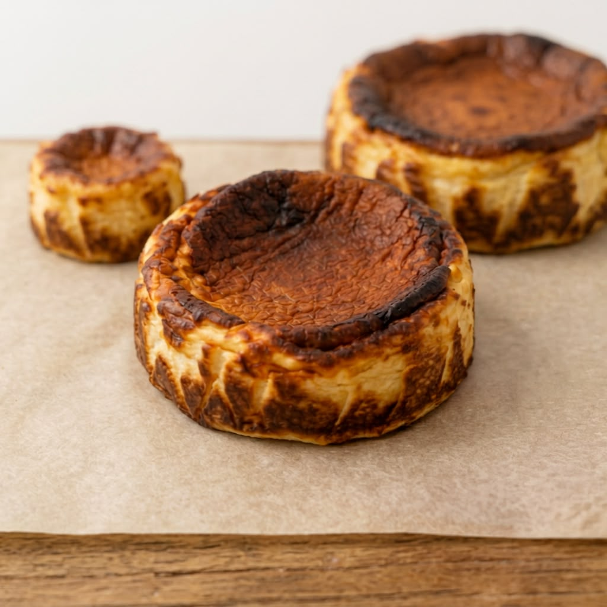

HECHAS PARA DISFRUTAR
Encuentra tu
favorita.
Una sola tarta vasca, cremosa por dentro y tostada por fuera, en el tamaño que mejor se adapte a tu momento.
Ver el menú ↗
HECHAS PARA DISFRUTAR
Una sola tarta vasca, cremosa por dentro y tostada por fuera, en el tamaño que mejor se adapte a tu momento.
Ver el menú ↗